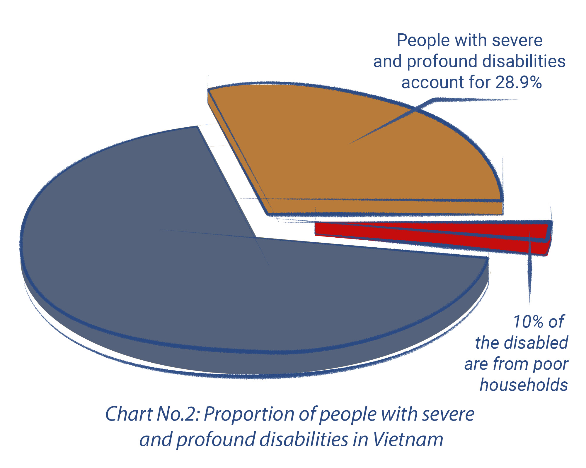

Results of the National Survey on People with Disabilities
(2016)
Estimated casualties and economic losses from road accidents. Source: Irap.org
The longing for traffic accessibility is more than a simple wish for people with disabilities, it also represents their desire for a path of hope – a way for them to integrate into community, to gain access to healthcare, education, and employment prospects. However, the presence of inaccessible infrastructure hinders people with disabilities as they seek to realize their dreams. The stories of a disabled athlete, a visually impaired former journalist and a wheelchair – bound Master are among the real stories telling us about the everyday struggles of real people with disabilities in Hanoi and Ho Chi Minh City, with their poignant stories detailing their challenges and wishes for paths of hope. Through these real-life accounts we aim to enrich the experience and engagement of the audiences and we have acquired multimedia storytelling techniques to recount their stories. The audience can access the stories by watching, reading and listening at the same time and find themselves able to relate to each person. We hope that our stories can give people an insight into the accessibility challenges faced by people with disabilities so that we can lend a helping hand to those who have been working tirelessly for their better life and better society.
Ho Thi Thu Mai, born in 1991 in Binh Phuoc province in Vietnam, has suffered from lower limb disability since childhood and must walk on crutches. She is one of 7 million disabled people residing in Vietnam.
Mai becomes accustomed to commuting by bus during 4 years of studying Information Technology at Nguyen Tat Thanh University.
“Taking the bus is quite stressful. Some buses will stop until the passengers board. Some buses bypass stops. Sometimes I want to cry. I'm almost late for school, yet some bus drivers intentionally drop passengers off far away from the stops, then quickly drive away. How could I get on the bus on time? I've had to walk home several times because I missed the bus,” Mai said.


No spaces for people with disabilities in bus shelters
Public transport enables people with disabilities to participate in the daily commute, have easier access to the community, and enjoy better social interactions
However, the absence of low-floor and disabled-friendly buses and the general lack of accessibility infrastructure in bus terminals prevents disabled people from accessing healthcare services, employment prospects, as well as taking part in recreation activities
Wheelchair spaces on bus occupied by other passengers


Mai has no seat and must stand for over 10 kms
In the midst of the COVID-19 pandemic in Ho Chi Minh City, Mai's tragedy occurred. In September, 2021, she was diagnosed with ovarian cancer, liver failure, renal failure, sepsis, and hip necrosis
In 6 months, Mai underwent three surgeries, both major and minor ones, at three major hospitals in Ho Chi Minh City in order to remove tumors and abscesses from her body, all whilst struggling with a blood infection.

However, her strong spirit helped the little girl overcome death in a spectacular way. Despite this strength, osteonecrosis causes joint destruction and deformity, stopping Mai from walking as before and relying on a wheelchair for mobility.
- “I stayed at Tu Du hospital for more than a month. When the infection rate dropped, I was discharged and sent to Cho Ray hospital to treat my leg. However, replacing artificial hip joint will cost about 50 million to 70 million, which I cannot afford right away,” sadly she said.
During her stay in hospital, despite being financially supported by the Sponsoring Association for the Disabled in her hometown, the Association of People with Disabilities where she participates in sporting activities, as well as teachers and friends, Mai's family were heavily in debt.
Mai’s health became worse. She lost her job but she remained very determined. As soon as her health got better she collected her saving money to buy an electric trike and started to sell lottery tickets
Except for sick days, every day at 8 am, Mai departed from her poor house, driving to every household to sell lottery tickets.


Every day, Mai receives 280 tickets from a “retailer”, who is also a disabled person. If she could sell all of the tickets, she could pocket VND280,000. After deducting meal and accommodation expenses, she is able to save about VND100,000 for upcoming surgeries. But if she was sick or the trike broke down, it could cost her millions of VND.
What is really stressful to Mai every day is the commute on the congested and bumpy route with lots of potholes without wheelchair-accessible sidewalks.
Mai said that she is most scared of rainy days because it’s dangerous for her to get involved in traffic. Also, she therefore wouldn’t sell the tickets on such days and risk losing millions of VND. "On rainy days, potholes are flooded with rain water so I couldn’t see anything. If my trike hits a pothole, it could flip over, falling onto the road and could possibly be crushed by other vehicles. I am really stressed but the only thing I can do is pray"
There’s no way to force them to watch my tricycle. We are dependent on them so just accept that. There are different types of people in this society and many of them are kind and care about us!
There was a time when I went to the Hospital of Traumatology and Orthopedics in Tran Hung Dao street in District 5 of Ho Chi Minh City and no parking zone accepted my tricycle because of its size. Therefore, I had to leave my tricycle on the road to go to the hospital for examination.
Late afternoon is the best time of the day. Mai can play sports with friends just like her. Three times per week, 2 hours each, Mai practices javelin throwing, discus throwing and weightlifting to prepare for the annual Para Games.
The Para Games are annually organized in different cities, so Mai and her friends have the chance to travel and experience multiple transportations such as trains or airplanes.
“Travelling to Da Nang city by train was fascinating. Some of my friends had to travel on their own, which was really exhausted because train station and carriage are too high to get on by themselves. Mr. Phuc, our coach, had to carry each of them onto the train,” Mai said.
Perhaps, the greatest happiness for Mai and other athletes with disabilities is the first visit to the Capital of Hanoi in 2022. Mai spent her whole week searching for information about the best sightseeing in Hanoi, instead of preparing for the competition.
Mai’s achievements in the Para Games include 6 gold medals and dozens of silver medals.
Attending the 2023 National Championships of Athletics recently held in Ho Chi Minh City, although I only won two Silver Awards, I did not feel sad because after several surgeries, my joints were damaged so I could no longer throw accurately

Ho Thi Thu Mai received the winning 2 Silver medals in the Para Games 2023.

After deaths cheated twice, being alive is already a great happiness. Living with gratitude and enjoying present moments are motivations for me to overcome daily difficulties and hardships.
Mai said, after experiencing the line between life and death, every morning I wake up, I feel happy and grateful for still being able to breathe! I am grateful that I am still alive, still able to go selling lottery tickets every day, meeting my friends and my teachers. One day, I will save enough money for the surgery. If I am lucky enough, I would walk on my own feet, no need of any wheelchair.
When one door shuts, another door opens. Mai believes that if she thinks positive, then miracle will come because there are still many kind and warm-hearted people out there always willing to help disabled people like her to engage in the community.